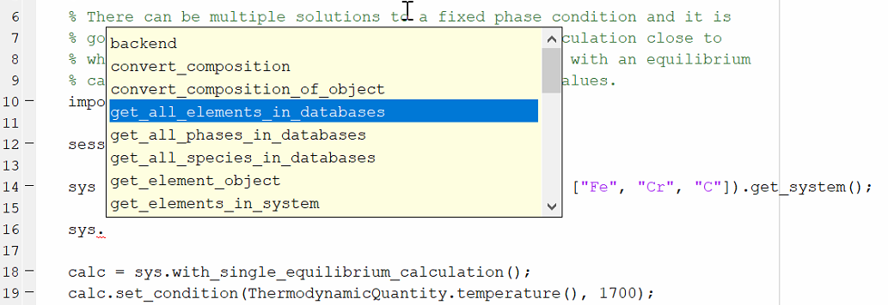
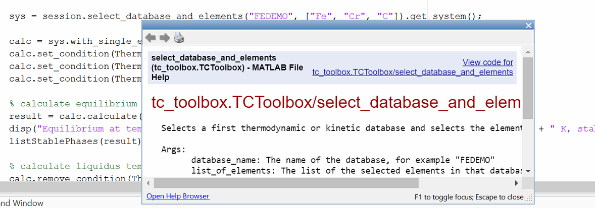
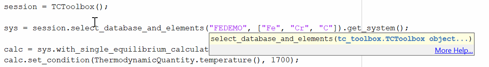

Best Practices¶
Using Tab-Completion and the Integrated documentation¶
TC-Toolbox contains over 1000 functions and more than 200 classes. These functions are available for use in different contexts, as described in the Architecture overview.
In order to know which functions and classes are available for you at a given time and how they can be used, we encourage you to use MATLAB® tab completion and the MATLAB® help.
This is a feature of MATLAB® and the exact functionality can vary depending on the version of MATLAB® and if you use MATLAB® live scripts, classic MATLAB® scripts or the interactive console.
To access tab completion, press the dot (.) key then Tab. Use the up/down arrow keys to scroll through the list.
To open the help for a specific function or class, click to place the cursor on the function or object and press the F1 key.
The built-in help for parameters of a specific function can be reached by placing the cursor within the parentheses of the function and pressing CTRL + F1.
Click More Help… to view the corresponding help text.
Note
The MATLAB® script first needs to be run before you can view help text when More Help… is clicked. Once the script is run, the respective object is present in the workspace and the help is available.
Re-use of the Single Equilibrium Calculation State¶
The Thermo-Calc core keeps an internal state containing the data from previously performed calculations (such as composition of sublattices, previously formed phases, etc.). This is used for start values of future calculations (if not explicitly overwritten) and can strongly influence their convergence and calculation time. It can be useful to save and restore later the core-state in advanced use cases, these include:
Improving the convergence speed in case of very complicated equilibria if a similar equilibrium has already been calculated. “Similar” refers here primarily to composition, temperature, and entered phase set. This case can occur, for example, with the Thermo-Calc nickel-based superalloys database, TCNi.
Convenient and fast switching between states that have changed a lot (for example regarding suspended phases, numerical settings, etc.)
The mechanism of saving and restoring the state is called bookmarking and is controlled with the two methods
bookmark_state() and set_state_to_bookmark(). The following short example shows how to switch between
two different states:
import tc_toolbox.*
session = TCToolbox();
calc = session...
.select_database_and_elements("FEDEMO", ["Fe", "C"])...
.get_system()...
.with_single_equilibrium_calculation()...
.set_condition(ThermodynamicQuantity.temperature(), 2000.0)...
.set_condition("X(C)", 0.01);
calc.calculate();
bookmark_temp_condition = calc.bookmark_state();
calc.set_phase_to_fixed("BCC", 0.5);
calc.remove_condition(ThermodynamicQuantity.temperature());
bookmark_fixed_phase_condition = calc.bookmark_state();
result_temp = calc.set_state_to_bookmark(bookmark_temp_condition);
disp("Conditions do contain temperature:")
disp(result_temp.get_conditions())
% this calculation had already been performed
disp("Stable phases (do not contain BCC):")
disp(result_temp.get_stable_phases())
result_fixed_phase = calc.set_state_to_bookmark(bookmark_fixed_phase_condition);
disp("Conditions do not contain temperature:")
disp(result_fixed_phase.get_conditions())
% this calculation had **not yet** been performed
disp("Stable phases (do contain BCC):")
disp(calc.calculate().get_stable_phases())
Re-use and Saving Results¶
Before a calculation is run in MATLAB®, a check is made to see if the exact same calculation has run before, and if that is the case, the result from the calculation can be loaded from disk instead of being re-calculated.
This functionality is always enabled within a script running MATLAB®, but you can make it work the same way when re-running a script, or even when running a completely different script.
You can set up a folder location to re-use results from saved calculations. This folder can be a network folder and
shared by many users. This is done using the method set_cache_folder().
import tc_toolbox.*
session = TCToolbox();
session.set_cache_folder("cache")
The calculation is not re-run if there is a previous MATLAB® calculation with the same cache folder and exactly the same settings; the result is instead loaded from disk.
Another possibility is to explicitly save the result to disk and reload it later:
import tc_toolbox.*
session = TCToolbox();
% ... the system and calculator are set up and the calculation is performed
result = calculator.calculate()
result.save_to_disk("./result_dir")
You can then load the result again in another session, for example:
import tc_toolbox.*
session = TCToolbox();
result = session.load_result_from_disk().diffusion("./result_dir")
[x, frac] = result.get_mole_fraction_of_component_at_time("Cr", 1000.0)
Using the TCToolbox class efficiently¶
Normally you should only create one TCToolbox() variable.
Note
When a TCToolbox() variable is deleted, the Java backend engine process is stopped and all temporary data is
deleted. When creating a new TCToolbox() variable, a new Java process is started. This can take several
seconds.
If appropriate, it is safe to create a TCToolbox() variable in a loop. Due to
the time it takes this only makes sense if the calculation time per iteration is longer than a minute.
To prevent creating a TCToolbox() variable multiple times, you can use the following pattern.
Example:
import tc_toolbox.*
session = tc_toolbox.TCToolbox();
system = session.select_database_and_elements("FEDEMO", ["Fe", "Cr"]).get_system();
calculation = system.with_single_equilibrium_calculation();
calculation.set_condition("T", 1000);
for i = 0:50
calculate(calculation)
end
function calculate(calculator)
% you could also pass the `session` or `system` object if more appropriate
calculator.set_condition("W(Cr)", 0.1);
% further configuration ...
result = calculator.calculate();
% ...
result.invalidate(); % if the temporary data needs to be cleaned up immediately
end
Parallel Calculations¶
It is possible to perform parallel calculations with TC-Toolbox using the Parallel Computing ToolboxTM of MATLAB®. This is a separate toolbox that can be purchased for MATLAB®, it is not part of the standard configuration of MATLAB®.
A general pattern that can be applied is shown below. This code snippet shows how to perform single equilibrium calculations for different compositions in parallel. In the same way all other calculators of Thermo-Calc can be used or combined.
Example:
num_processes = 2;
min_cr = 10; % in wt-%
max_cr = 19; % in wt-%
delta_cr = 1; % in wt-%
chunk_size = 5; % this simple code expects that the Cr-range can be exactly divided into such chunks
if (isempty(gcp('nocreate')))
parpool("local", num_processes);
end
num_points = 1 + (max_cr - min_cr) / delta_cr;
total_cr_range = linspace(min_cr, max_cr, num_points);
chunked_cr_ranges = num2cell(reshape(total_cr_range, chunk_size, []), 1);
% this requires the Parallel Computing Toolbox(TM), can be run with "for" instead without parallelization
num_chunks = ceil(num_points / chunk_size);
bcc_fraction_results = cell(num_chunks, 1);
parfor chunk_index = 1 : num_chunks
bcc_fraction_results{chunk_index} = do_perform(chunked_cr_ranges{chunk_index});
end
bcc_phase_fraction = cell2mat(bcc_fraction_results);
% ... use the result in `bcc_phase_fraction`, for example for plotting
function phase_fractions = do_perform(cr_range)
% this function is running in a subprocess
import tc_toolbox.step_or_map_diagrams.*
import tc_toolbox.*
elements = ["Fe", "Cr", "Ni", "C"];
session = TCToolbox();
sys = session.select_database_and_elements("FEDEMO", elements).get_system();
calc = sys.with_single_equilibrium_calculation();
calc.set_condition(ThermodynamicQuantity.temperature(), 1100.0); % in K
calc.set_condition(ThermodynamicQuantity.mass_fraction_of_a_component("C"), 0.1 / 100);
calc.set_condition(ThermodynamicQuantity.mass_fraction_of_a_component("Ni"), 2.0 / 100);
phase_fractions = zeros(size(cr_range, 1));
for cr_index = 1 : size(cr_range, 1)
cr = cr_range(cr_index);
calc.set_condition("W(Cr)", cr / 100);
result = calc.calculate();
phase_fractions(cr_index) = result.get_value_of("NPM(BCC_A2)");
end
end
Handling Calculation Engine Crashes¶
In some cases the Thermo-Calc calculation engine can crash. If batch calculations are performed, this brings
down the complete batch. To handle this situation there is an error you can use:
UnrecoverableCalculationException().
That error is raised if the calculation server enters a state where no further calculations are possible.
You should catch that exception and create a new instance of TCToolbox(), which you use from that point.
Example:
import tc_toolbox.*
import tc_toolbox.diffusion.*
temperatures = linspace(900,1100,10);
session = TCToolbox();
for i = 1:length(temperatures)
temperature = temperatures(i);
try
diffusion_result = session...
.select_thermodynamic_and_kinetic_databases_with_elements("FEDEMO", "MFEDEMO", ["Fe", "Ni"])...
.get_system()...
.with_isothermal_diffusion_calculation()...
.set_temperature(temperature)...
.set_simulation_time(108000.0)...
.add_region(Region("Austenite")...
.set_width(1E-4)...
.with_grid(CalculatedGrid.linear().set_no_of_points(50))...
.with_composition_profile(CompositionProfile()...
.add("Ni", ElementProfile.linear(10.0, 50.0))...
)...
.add_phase("FCC_A1"))...
.calculate();
[distance, ni_fraction] = diffusion_result.get_mass_fraction_of_component_at_time("Ni", 108000.0);
disp("Succeeded!")
catch e
if contains(e.message, 'UnrecoverableCalculationException')
disp('Could not calculate. Creating a new TCToolbox and continuing with next calculation...')
session = TCToolbox();
else
disp('Could not calculate. Using the previous TCToolbox and continuing with next calculation...')
end
end
end
Process Metallurgy Calculations¶
Equilibrium calculations with changing elements between calculations¶
It is possible to add, change or remove additions after performing an equilibrium calculation using
+tc_toolbox.+process_metallurgy.+equilibrium.EquilibriumCalculation.calculate(). This will change the elements
being present in the system if the elements of the additions are differing. The Process Metallurgy Module will handle
this situation by reloading the database with the latest set of elements. While this is an appropriate approach in most
cases, there can be some disadvantages: reloading the database takes some time and the internal engine state
is lost, which may lead to successive calculations failures in some situations.
To avoid the database reload, it is possible to add the respective elements to additions being present in all calculations (with a zero-fraction):
import tc_toolbox.process_metallurgy.base.*;
import tc_toolbox.process_metallurgy.equilibrium.*;
import tc_toolbox.*
session = tc_toolbox.TCToolbox();
calc = session.with_metallurgy().with_adiabatic_equilibrium_calculation(ProcessDatabase.OXDEMO);
% add the element Al with zero-fraction already
steel = EquilibriumAddition(containers.Map(["Fe", "C", "Al"]), {NaN, 4.5, 0.0}), 100.0e3, 1700 + 273.15);
slag = EquilibriumAddition(containers.Map(["CaO", "SiO2"], {70.0, 30.0}), 3.0e3, 1700 + 273.15);
al_addition = EquilibriumAddition(containers.Map(["Al"], {100}), 1.0e3);
calc...
.add_addition(steel)...
.add_addition(slag);
result_1 = calc.calculate();
calc.add_addition(al_addition);
result_2 = calc.calculate();
% evaluate the result as required ...
Or to add a later addition already before the first call to calculate() with a zero amount:
import tc_toolbox.process_metallurgy.base.*;
import tc_toolbox.process_metallurgy.equilibrium.*;
import tc_toolbox.*
session = tc_toolbox.TCToolbox();
calc = session.with_metallurgy().with_adiabatic_equilibrium_calculation(ProcessDatabase.OXDEMO);
steel = EquilibriumAddition(containers.Map(["Fe", "C"]), {NaN, 4.5}), 100.0e3, 1700 + 273.15);
slag = EquilibriumAddition(containers.Map(["CaO", "SiO2"], {70.0, 30.0}), 3.0e3, 1700 + 273.15);
% add the addition for now with zero-amount
al_addition = EquilibriumAddition(containers.Map(["Al"], {100}), 0);
calc...
.add_addition(al_addition)...
.add_addition(steel)...
.add_addition(slag);
result_1 = calc.calculate();
calc.update_addition(al_addition.set_amount(1.0e3));
result_2 = calc.calculate();
% evaluate the result as required ...
Zones¶
TC-Toolbox is providing a framework for building time-dependent kinetic simulations of industrial and academic metallurgical processes where liquid phases are important. It is based on an Effective Equilibrium Reaction Zone (EERZ) approach which is separating a process into different zones. These zones have identical temperature and composition and are called bulk zones. Such zones can be in contact and react with each other by reaction zones. That means a reaction zone is modelling the interface between two bulk zones. One bulk zone is typically the steel melt and another bulk zone the top slag.
Applications¶
While this approach can in principle be extended to any number of zones, in the current release TC-Toolbox is providing only one reaction zone. Practical work has however proven that this limitation is not critical for a lot of industrial processes, including ladle furnaces, AOD- and VOD-converters. Even more processes can be modelled with some limit of accuracy.
The reason for the power of the current implementation is that a number of important process features can be included:
heating (
+tc_toolbox.+process_metallurgy.+process.Zone.add_power())cooling (
+tc_toolbox.+process_metallurgy.+process.Zone.add_power())heat transfer between bulk zones (
+tc_toolbox.+process_metallurgy.+process.ReactionZone.add_heat_transfer())inclusion formation
inclusion flotation and other transfer of phase groups between bulk zones (
+tc_toolbox.+process_metallurgy.+process.ReactionZone.add_transfer_of_phase_group())addition of material and gas at any time in any zone (
+tc_toolbox.+process_metallurgy.+process.Zone.add_addition()/+tc_toolbox.+process_metallurgy.+process.Zone.add_continuous_addition())an exhaust gas zone collecting all formed gas (
+tc_toolbox.+process_metallurgy.+process.ProcessSimulationResult.get_exhaust_gas())time-dependent definition of most parameters (e.g., mass transfer coefficient, transfer of phase group, heating, etc.)
Please note that many of these features are called as well a reaction zone in other EERZ model implementations.
Implementation of practical process models¶
The Process Metallurgy Module has been successfully applied to a number of industrial processes.
Due to the broad range of industrial metallurgical processes, TC-Toolbox is not providing ready-to-use models for certain processes. There are however examples available for common processes and this collection will be extended over time. The implementation of a model is an abstraction of the real process and should always be kept as simple as possible. Practical experience has proven that in many situations not more than one reaction zone is required.
The mass transfer coefficient is a fundamental parameter describing the kinetics in a reaction zone and is generally an empirical parameter. It depends however mostly on the geometry and stirring conditions in the process and not on the material compositions. Further on, the mass transfer coefficient has usually typical values for a given process - regardless of the actual furnace. That means that existing suggestions from the literature can be used as a starting point to derive the actual mass transfer coefficient for the process of interest.